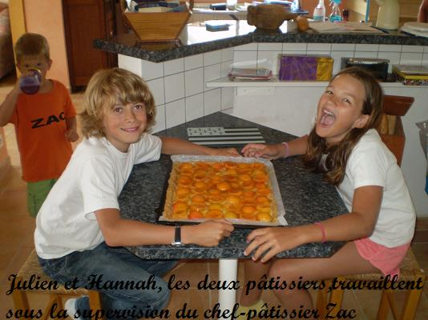

Recette n°222 : tarte aux abricots

Ingrédients : pour 6 personnes
- une pâte sablée ou feuilletée toute faite (pur
beurre si possible)
- pour la crème d'amandes :
- 100 gr de beurre
- 100 gr de sucre
- 2 oeufs
- 100 gr de poudre d'amandes
- 2 cl de rhum
- pour le reste :
- 1 kg d'abricot s
- 50 gr de sucre
- 2 cuillères à soupe de confiture ou
de gelée d'abricot
Préparation :
1 - Mettre le vfour à préchauffer à 180 C
2 - Mettre la pâte au fond du moule à tarte.
3 - Préparer la crème d'amandes :
3 - 1 - Ramollir le beurre
3 - 2 - Ajouter le sucre et fouetter
énergiquement
3 - 3 - Ajouter les oeufs et fouetter encore.
3 - 4 - Ajouter la poudre d'amandes.
3 - 5 - Ajouter le rhum.
4 - Déverser la crème sur la pâte.
5 - Disposer les abricots dénoyautés et
coupés en deux.
6 - Saupoudrer de sucrre.
7 - Enfourner et cuire 45 minutes environ.
8 - Réchauffer la gelée d'abricot pour la
liquéfier.
9 - Sortir la tarte du four et badigeonner le dessus de gelée
avec un pinceau.
Observations :
Recette préparée à Quiberon le 17 juillet 2009
pour les familles Béclin et Mathews (en doublant les doses, bien
sûr) qui ont beaucoup apprécié.